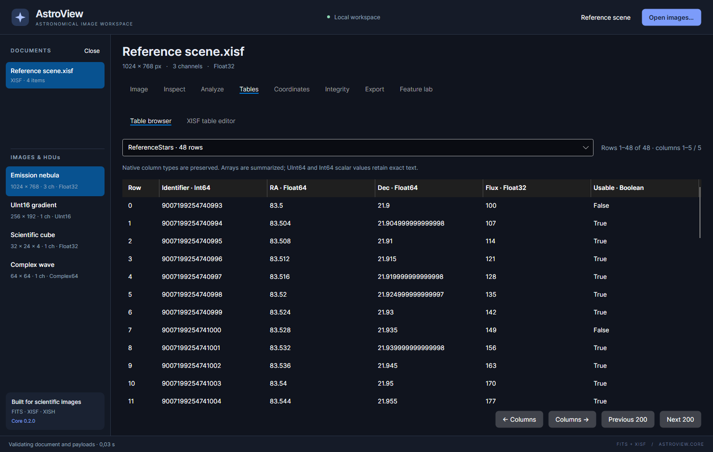

Tables and catalogs
The Tables workspace browses supported FITS ASCII/binary and XISF typed tables. XISF documents can also create or replace a document-level table through a JSON definition.

Browse a table
- Select the document containing your table.
- Open Tables → Table browser.
- Choose a table from the dropdown.
- Read its column headings and types, then navigate the rows/columns.
The browser displays up to 200 rows and 16 data columns per page. Use Previous 200 / Next 200 for row pages and ← Columns / Columns → for column pages. The summary shows the displayed ranges and total size. An unresponsive navigation button at the first/last page simply means there is no further page in that direction.
Integer scalar cells retain exact text, including Int64/UInt64 identifiers too large to represent exactly as doubles. Array cells are summarized rather than expanded into thousands of grid cells. A formatted summary is not a replacement for the underlying typed table data.
If there are no tables, check the selected document and its image/HDU entries. An image-only file legitimately has no catalog. The reference scene includes a 48-row star table you can use to learn the browser.
Create a XISF table
- Open a XISF document or create the reference scene.
- Select XISF table editor.
- Click Load example definition.
- Modify its identifier, fields or rows, retaining valid JSON.
- Click Apply table in memory.
- Return to Table browser, select the new table and check its values.
- Export the document to save the change.
A definition follows this structure:
{
"id": "UserCatalog",
"caption": "My reference stars",
"fields": [
{ "id": "Name", "type": "String" },
{ "id": "Flux", "type": "Float64" },
{ "id": "Flags", "type": "I32Vector" }
],
"rows": [
["Star A", 1234.5, [1, 0, 1]],
["Star B", 890.25, [0, 1, 0]]
]
}
id identifies the document-level table. Applying the same identifier replaces
that table; a different identifier adds another table. caption is a human-readable
description. Each field has an identifier and type; an optional header supplies
its heading. Every row must have one cell per field in the same order.
JSON requires quoted strings, unquoted numeric values, true/false for Boolean
values and decimal points in numbers. A TimePoint uses an ISO-style timestamp
string such as "2026-11-01T22:15:00+00:00".
Types and limits
The interactive editor supports scalar String, Boolean, TimePoint, signed/unsigned
integer and real types, plus integer/real vectors and rectangular matrices.
Use types such as Int64, UInt64, Float32, Float64, I32Vector and
F64Matrix. A vector cell is a JSON array; a matrix cell is an array of rows
with equal lengths.
The editor accepts 1–32 fields, up to 1,000 rows and up to 4,096 elements in an array cell. Embedded cell-block storage can impose an additional size limit; use a smaller cell if the editor reports that it exceeds its block limit. These limits apply to the interactive editor, not to every table the reader can browse.
FITS editing and conversion
FITS tables are readable but are not editable through this JSON editor. Preserve the native document when retaining their original storage is important. Converting FITS tables to XISF can transform or omit table-storage details, units, scaling and array representations. Review Analyze fidelity rather than assuming that a displayed table can be recreated unchanged in either format.
Advanced XISF types outside the JSON editor remain accessible through the full XISF XML editor or the developer API. Use the XML editor only when you understand the format's block/type requirements.